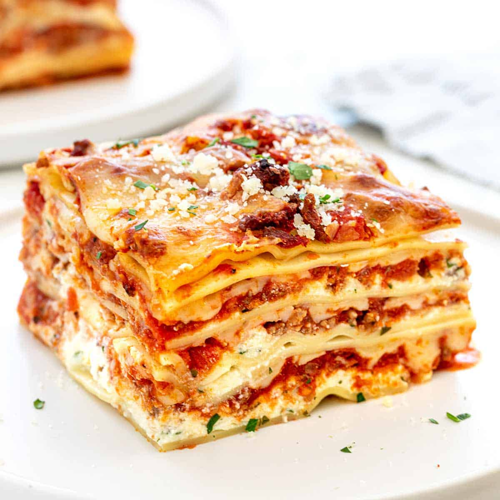

Lasagna

Lasagna
Lasagna is a wide, flat sheet of pasta.
Lasagna can refer to either the type of noodle or to the typical lasagna dish which is a dish made with several layers of lasagna sheets
with sauce and other ingredients, such as meats and cheese, in between the lasagna noodles.
In order to help you prepare this amazing recipe, we have prepared a list of ingredients followed by the steps you should follow:
Ingredients:
- 2 teaspoons extra virgin olive oil;
- 1 pound ground beef chuck;
- 1/2 medium onion, diced (about 3/4 cup);
- 1/2 large bell pepper (green,red or yellow), diced (about 3/4cup);
- 2 cloves garlic, minced;
- 1 28-ounce can good-quality tomato sauce;
- 3 ounces tomato paste (half a 6-ounce can);
- 1 (14 ounce) can crushed tomatoes;
- 2 tablespoons chopped fresh oregano, or 2 teaspoons dried oregano;
- 1/4 cup chopped fresh parsley.
Next, the steps required to prepare this dish:
- Put pasta water on boil;
- Brown the ground beef;
- Cook the bell pepper, onions, garlic, and back the beef;
- Transfer to medium sized pot, add tomatoes and remaining sauce ingredients to build the sauce;
- Boil and drain the lasagna noodles;
- Heat the oven to 375° F;
- Assemble the lasagna;
- Bake;
- Cool and serve!
Return to main page